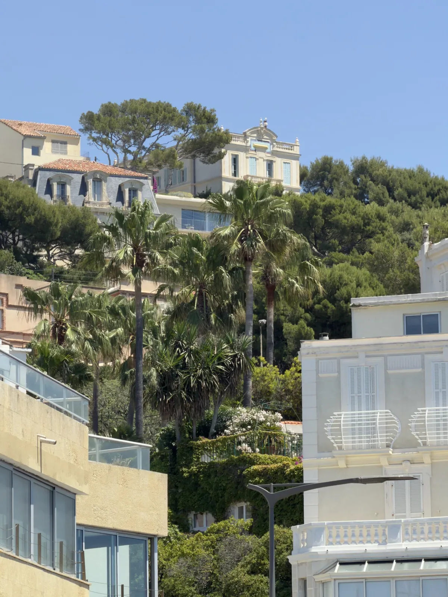

Dans le 7e arrondissement de Marseille, la valeur ne vient pas seulement du code postal. Endoume, Bompard, Saint-Victor, Roucas-Blanc, Malmousque ou la Corniche se lisent par micro-situation : vue, calme, extérieur, accès, pente, stationnement, immeuble et relation réelle à la mer.
Cette page sert de repère officiel pour estimer un appartement dans le 13007 à Marseille. Elle s’inscrit dans une lecture plus large du conseil immobilier à Marseille : comparer les prix visibles, relire la rue, vérifier le bien réel, puis demander une première lecture avant de publier ou de décider.
Le 7e bénéficie d’une image forte, parfois très premium. Mais une adresse prestigieuse ne suffit pas à justifier n’importe quel prix. Le marché regarde la vue, l’extérieur, le calme, la facilité d’accès, le stationnement, la qualité de l’immeuble et la manière dont le bien se vit au quotidien.
Un appartement à Saint-Victor ne se lit pas comme un bien à Endoume, Bompard ou Malmousque. La proximité mer peut être un vrai levier, mais seulement si elle se traduit par une qualité d’usage : promenade, ouverture, lumière, calme, commerce, accès ou sentiment de quartier.
Endoume porte une vraie force de quartier : commerces, ambiance village, proximité mer et vie locale. La page vendre un appartement à Endoume à Marseille 7e montre pourquoi le calme, le stationnement, la vue, l’extérieur et la micro-situation y changent fortement la valeur.
Bompard et Roucas-Blanc ajoutent une lecture plus résidentielle, parfois plus rare, avec des enjeux de pente, d’accès, de vue et d’intimité. Saint-Victor est plus central, plus urbain, plus proche du Vieux-Port. Malmousque ou le Vallon des Auffes peuvent porter une désirabilité très forte, mais l’accès, le stationnement et l’exposition restent décisifs.
La vue mer, même partielle, peut renforcer l’envie, mais elle ne suffit pas si le bien est difficile d’accès, bruyant, sombre ou sans confort d’usage. Un extérieur vraiment utilisable, une terrasse, un balcon, un jardin ou une place de stationnement peuvent déplacer sensiblement la valeur.
La pente et l’accès jouent un rôle très concret. Un appartement magnifique mais compliqué à rejoindre, sans solution de stationnement ou trop exposé au bruit peut être moins fluide à vendre qu’un bien plus simple, mieux placé dans son usage quotidien.

Dans le 7e, la valeur se joue souvent entre désirabilité d’adresse et confort réel : vue, calme, accès, extérieur, stationnement et micro-situation doivent tenir ensemble.
Dans le 13007, la proximité du Vieux-Port, de Saint-Victor, d’Endoume, du Vallon des Auffes, de la Corniche, du Frioul ou d’un usage nautique peut renforcer la désirabilité. Mais elle doit être relue avec le stationnement, la circulation, la pente, la saisonnalité, le bruit et la rareté réelle du bien.
Les données publiques et le prix au mètre carré donnent une base, mais ne voient pas toujours la qualité de la vue, le DPE, l’extérieur, l’accès, la copropriété, la lumière ou la facilité de vivre le bien au quotidien.
La première erreur consiste à surestimer un bien parce qu’il est dans le 7e. La seconde consiste à croire qu’une vue partielle ou une adresse connue suffit à neutraliser les défauts d’accès, de bruit, de pente ou de stationnement.
Le prix affiché peut refléter l’envie du vendeur. Le prix défendable dépend de ce que les acquéreurs acceptent réellement face à l’ensemble du bien : adresse, vue, extérieur, immeuble, contraintes et budget global.
Une estimation devient utile avant une mise en vente, un arbitrage patrimonial, une succession ou une comparaison avec d’autres secteurs premium de Marseille. Elle permet de distinguer ce que l’adresse apporte vraiment de ce que le bien doit encore prouver.
Repère DVF issu des mutations publiées 2021–2025 : environ 5 050 €/m².
🟡 Repère utile à l’échelle de l’arrondissement, à relire selon la rue, l’immeuble, l’étage, l’état, le DPE, l’extérieur, la copropriété, le stationnement, le bruit, la lumière et le moment de vente.
Ce prix repère n’est pas une estimation automatique. Le chiffre peut être cohérent à l’échelle du 13007 et fragile pour un appartement précis. Pour comparer avec les autres secteurs, voir les prix m² par arrondissement à Marseille.
Non. Le 7e peut soutenir des valeurs fortes, mais le prix dépend de la micro-situation, de l’immeuble, de l’accès, de la vue et du confort réel.
Elle peut peser fortement, mais son impact dépend de son ouverture, de sa qualité, du bruit, de l’étage et de l’ensemble du bien.
Souvent oui. Dans plusieurs secteurs du 7e, une solution de stationnement peut renforcer nettement la désirabilité.
Pour un appartement à Endoume, Bompard, Saint-Victor, Roucas-Blanc ou Malmousque, la valeur se relit à partir de l’adresse exacte, de la vue, de l’extérieur, du calme, de l’accès et du stationnement.